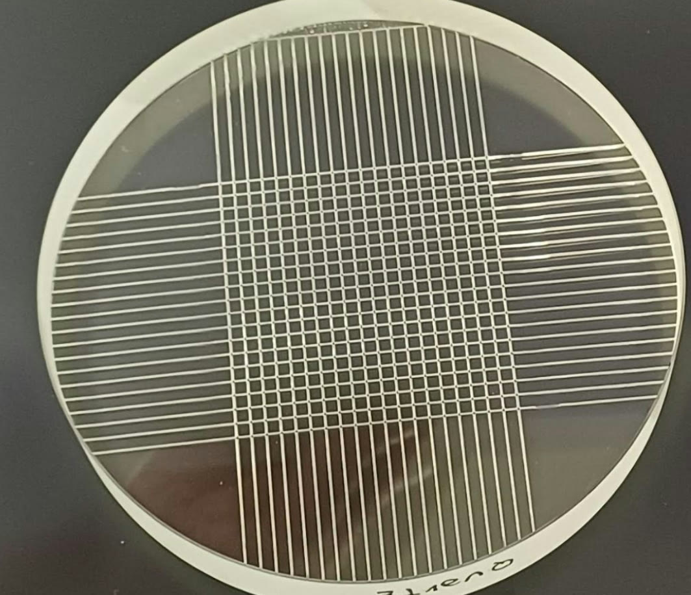
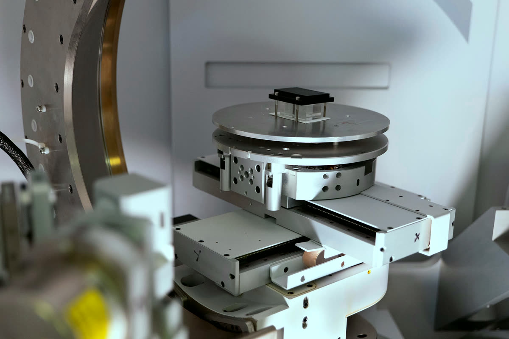
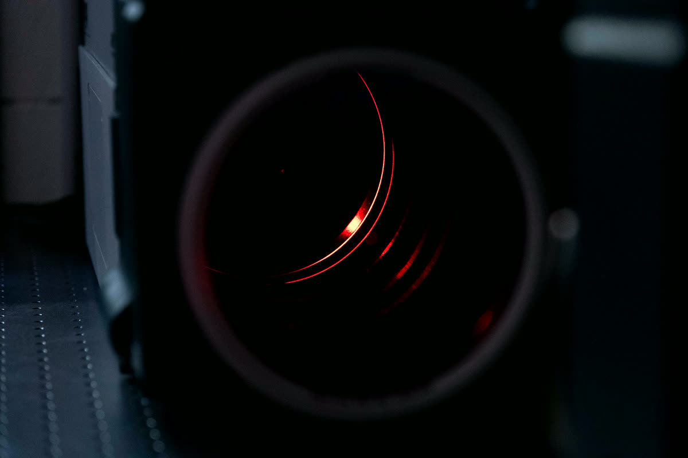

Crystal BOND / Devices
Devices
Four assemblies, from TeV proton beams to hard X-rays from space. Each one asks the crystal for a different shape, material and precision.

Assembly A1
Bent crystals for the LHC
Silicon crystals bonded to figured substrates, to deflect TeV beams by several milliradians.
- Material
- Silicon (110), dislocation-free
- Size
- about 70 × 20 × 3 mm
- Bending radius
- about 10 m, convex
- Miscut
- < 100 µrad
- Goal
- two crystals ready for the LHC
- Work package
- WP2
A bent crystal steers positive particles that enter it nearly parallel to its atomic planes: they are trapped between the planes (planar channeling) and follow their curvature. Silicon crystals made in Ferrara have collimated the LHC beams since 2023. Deflecting TeV beams by several milliradians, instead of the tens of microradians used for collimation, would open fixed-target experiments at the LHC, such as measuring the magnetic and electric dipole moments of short-lived charmed and strange baryons.
Large angles need long, thick crystals with a very uniform curvature. Today crystals are bent by metal holders: the curvature is hard to control, clamps twist the crystal, and the heavy holder burdens the goniometers that align it to the beam and adds impedance to the machine.
In BOND the crystal, 2 to 5 mm thick, is anodically bonded to a substrate machined to a radius of about 10 m, in glass, Grade 5 titanium or 316LN steel, materials suited to the LHC vacuum. Anodic bonding is routine for thin wafers in microelectronics; here it has to work on crystals ten times thicker, with a miscut below 100 µrad and much tighter control of the shape.
A first anodically bonded crystal has already been to CERN: silicon bonded to a glass substrate figured to a cylinder of 5.2 m radius, tested on the H8 beamline of the SPS for the TWOCRYST study. Its curvature along the beam is considerably more uniform than that of a crystal clamped in a holder.

Assembly A2.1
Bent crystal analysers
Spherical analysers in quartz, lithium niobate and germanium for high-resolution X-ray spectroscopy.
- Materials
- quartz, lithium niobate, germanium
- Shape
- spherical or cylindrical, concave, Ø ≈ 100 mm
- Radius
- 0.1–1 m
- Geometry
- Bragg (reflection)
- Goal
- ≈ 10 meV resolution
- Work package
- WP3, WP4
Resonant inelastic X-ray scattering, X-ray Raman and emission spectroscopy measure small energy changes of photons scattered by a sample. A bent crystal analyser selects the energy by Bragg diffraction, 2d sin θB = λ, and focuses the photons on the detector from its whole surface. Its resolution follows ΔE/E = cot θB · Δθ: every shape error of the crystal widens Δθ.
Analysers are mostly silicon wafers bonded to glass. Silicon limits the photon energy, the reflectivity and the angles available close to backscattering. Quartz, lithium niobate and germanium do better, but are hard to machine and today are glued, which leaves shape errors that spoil their advantage.
BOND bonds these crystals, 0.2 to 0.5 mm thick, to substrates figured as spherical or cylindrical concave surfaces with radii from 0.1 to 1 m, aiming at an energy resolution around 10 meV. Two spherical samples are planned for each material.
The analysers are designed with RowlandBench, a program that simulates the whole spectrometer, from the source to the detector.
Assembly A2.2
Crystals for spectral imaging
Cylindrically bent Laue crystals that spread a synchrotron beam by energy, for K-edge imaging.
- Materials
- silicon, germanium
- Shape
- cylindrical, concave, open for the beam
- Radius
- 0.1–0.5 m
- Geometry
- Laue (transmission)
- Goal
- two crystals in Si, two in Ge
- Work package
- WP4
In spectral K-edge subtraction imaging a thin crystal bent to a cylinder diffracts a polychromatic synchrotron beam in Laue geometry. Each part of the crystal sends a slightly different energy to a common focus, where the sample sits; behind it the energies spread out across an area detector. Images just below and just above the absorption edge of a contrast agent separate it from soft tissue and bone.
Small bending radii, below 30 cm, widen the energy band enough to use several edges at once, such as iodine (33.17 keV), xenon (34.56 keV) and barium (37.44 keV), and to try gadolinium (50.2 keV) and gold nanoparticles (80.7 keV). Today the crystals are bent by mechanical, motorised benders that correct torsion and anticlastic bending: bulky, and never quite exact.
Bonded to a substrate with an opening for the beam, the crystal keeps a clean cylindrical shape without torsion. The Trieste unit has simulated the optimum: silicon (110) with an asymmetry towards (1-11), for 15–40 keV. Tests are planned at Elettra (SYRMEP), the Canadian Light Source and ESRF.

Assembly A3
Building blocks for Laue lenses
Rows of aligned bent tiles that focus hard X-rays and γ rays above 100 keV.
- Materials
- silicon, germanium
- Tiles
- about 10, each 30 × 20 × 2 mm
- Radius
- 20 m, convex
- Alignment
- within 50 µrad
- Energy
- > 100 keV
- Work package
- WP3, WP4
Above 100 keV no mirror can focus photons, and γ-ray telescopes still rely on collimators and coded masks, with limited sensitivity. A Laue lens focuses them by diffraction in many crystals arranged on concentric rings; a focusing lens would let us study, for example, the nuclear lines of radioisotopes made in Type Ia supernovae.
Curved crystals diffract a wider band and with higher efficiency than flat ones, but every tile must have the same curvature and be aligned with its neighbours to a few tens of microradians.
BOND bonds about ten tiles, 30 × 20 × 2 mm each, onto one substrate figured to a radius of 20 m, all aligned within 50 µrad: a demonstrator of the building block of a lens for future space missions. The miscut of the silicon and germanium wafers is made uniform beforehand.
